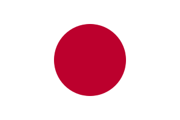

Flash-card quizzes to build your Japanese vocabulary — 頑張ってください (ganbatte kudasai)!
Japanese has around 125 million speakers, spoken almost entirely within Japan, and its vocabulary underpins a huge amount of globally exported culture — from anime and manga to video games and cuisine — which is part of why so many learners are drawn to it.
Every language deck on Flashlingo comes in three levels, so you can start where you actually are instead of where a textbook assumes you are.
Konnichiwa (hello), Arigatou (thank you), Onegaishimasu (please), Hai / Iie (yes / no), and Sayounara (goodbye) are a good everyday starting set.
No — words are shown in romaji so you can build spoken vocabulary first, then add kanji reading as a separate step whenever you're ready for it.
Word order and particles take some adjustment, but verb conjugation is simpler and far more regular than in most European languages, which balances things out.
Spoken vocabulary is useful immediately, while reading fluency in three scripts takes much longer to build — starting with words you can actually use keeps motivation high.